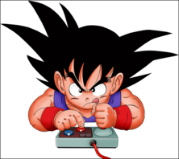

Em relação aos jogos, já completei alguns títulos memoráveis, como Sonic Generations e Assassin's Creed IV, entre outros.
Atualmente, tenho direcionado minha atenção mais para jogos online, mergulhando em experiências como League of Legends (LoL), Valorant e Rocket League.
A dinâmica competitiva e a interação em tempo real com outros jogadores acrescentam uma dimensão empolgante à minha experiência de jogo.
É fascinante como os videogames evoluíram para incluir não apenas narrativas envolventes, mas também a oportunidade de colaborar ou competir com jogadores de todo o mundo.
Isso tem sido uma reviravolta interessante em minha jornada gamer.
